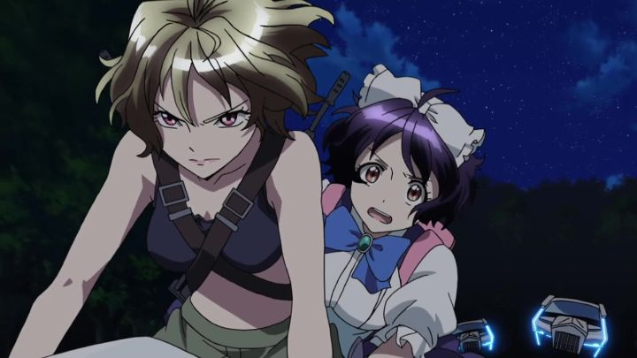

Oooh, boy... there's a lot to talk about with "Cross Ange - Rondo of Angel and Dragon." It's one thing to be bad, another to be a mess, and a whole other to be offensive enough to stink up the room until it leaves. At least in its first impression.The show was produced at Sunrise, known for the "Gundam" franchise and their more recent success in "Code Geass." I can imagine how the concept for the show was pitched: "That show "Code Geass" was popular for us, and had a gripping political story... "Geass" has some hot girls in it... let's make it again, but with more hot girls..." And indeed, it should feel very familar for fans of "Geass" in almost every aspect, from character design to music to story themes and direction. Even the music and opening and ending credits are similar. And yes, there are more hot girls, making up a nearly all-female cast, frequently in modes of undress, or with their underwear and cleavage clearly seen through their otherwise normal clothes. But "Ange" takes things too far in its story, in what appears to be an attempt to both shock and titilate at the same time, only leaving one with the feeling of disgust.In a fictional world, Angelise (a much more normal name than what would later become "Ange") is a princess of a kingdom. The Misurugi Empire knows nothing but peace and harmony, its people all prosperous and happy. In this world, most people are born with the magic of "mana," but there are rare instances of humans born without the power, who become known as "Norma." In the first episode, we learn that "norma" are not tolerated, and are believed to be the root of all bad things in the kingdom: upon their discovery, even when young, they are taken away from their families, presumably to be dispposed of. ... so let's stop there for a moment. We're "told" that Norma are bad, but there is absolutely no explanation as to why they are. Everyday work doesn't seem to make use of mana, so they wouldn't be useless. They don't look or act any different. There was no mention of war or rebellion that would cause fear of Norma. Clearly, this is meant to be a metaphor for segregation and racism, but no effort was made to make it believable, and even the explanation late in the series doesn't help. And the test to prove someone was a Norma? Generate a magic barrier around them, and if they can simply walk out, then they must be one! Wait... wouldn't it be easier to use magic to break such a barrier, or to create a barrier that wasn't physically passable by anyone? The test holds less sense than old witch-hunt trials. ... anyway, during an important coming-of-age ceremony, Angelise (herself shown to despise Norma and see them as less than human, as taught by society) is found to be a Norma. She never knew this, but her parents did, trying to keep it a secret for over a decade. It's revealed by an ambitious brother prince no less, in what we assume is a move to take the throne for himself. Her mother dies in their escape attempt, and Angelise is taken to where all Norma go: not directly to their deaths, but to an island off the country, where massive dragons mysteriously pass through a portal and theaten the planet. The Norma are allowed to live only for the purpose of killing these dragons each day, using large mecha-pilot robots, in order that the rest of the world can live in peace. ... again, wouldn't mana make it easier to fight against monsters like these dragons? Why send the least equipped people to do it in very expensive technology? Also, only girls can be Norma, so the entire island is made up of women, who tend to have sex with each other to help pass the time. This show makes my head hurt...Ange is basically exiled from her home, no longer a princess, no longer with her family or servants to do anything for her. In many ways, she's downright helpless. Except for where it matters, like her uncanny ability to pilot the strongest mecha in the corps, because the story demands it. A key part of the story is watching her downfall from grace to what society sees as less than insects, forced to fight for her life every day in this army-styled jail. To make that case, Ange is humiliated, often sexually, from body cavity searches, rape from creepy officers and teammates, forced to walk around naked, and more. Almost all of it a power play from those above her, to make a point that Ange, too, is a Norma, one of the race that she despised. I don't care if it's "for the story," sexualized torture-porn is gross to watch and is unnecessary, including here.  Although it's hard to sympathize with Ange despite what she goes through. For the first several episodes, she insists that she couldn't be a Norma, and demands that she be allowed to contact her family, unwilling to wake up to her situation. And she still has a deep hatred for Norma... the allies fighting alongside her... and frequently says so out loud, not recognizing them as human beings or as being worthy to be spoken to. Naturally, everyone wants to kill her, but tries to be the bigger person, while Ange remains arrogantly nasty. I still don't think she deserves to be rapped, no one does. But my gosh, the show goes out of its way to make sure the viewers hate its protagonist. It doesn't take long for her co-pilots to become nasty versions of "Mean Girls," putting her through bullying attempts worse than I'd ever seen: I didn't just hate the protagonist, I hated EVERYONE!Anyway, there are sexualized scenes that are hard to watch. There are less-explicit scenes of fanservice that just seem bizarre (did we really need to see Ange and her Mom's massive knockers in their see-through pajamas? And if it's see-through, why wear them at all?). Strangely, there aren't any explicit nipples, which would have been tame relative to what IS portrayed on screen. There's also some disturbing violence: to send the point home as to how dangerous the dragon-fights are, Ange sees some of her allies get ripped apart in bloody fashion in front of her. In fact, in the early fight in the series, it's her fault they died... and she STILL doesn't grieve, for "why would someone cry when an insect dies?" Not that the show really gives enough time to make the viewers appreciate the deaths... "Geass" had some odd direction and editing choices too, but "Cross Ange" is pretty shoddy with how rapidly it will do things that seem to need more time. This mostly covers the first five episodes, although the worst elements still persist is some fashion through the 25 episodes. But... and I can't believe I'm saying this, after how frustrating those early episodes are... it gets better as it goes. There are some awkward attempts at comedy early on, but later in the first half, we get some genuinely funny moments (in an innocent and heartfelt way). We get some new characters that aren't full of bile. Ange's personality remains frustrating throughout the show, but as least grows towards the better side, seemingly when she begins to have those nicer characters around her for a change. And by the halfway point, there are so many unbelivable but exciting revelations and plot twists that the show becomes much more rousing and entertaining. It's by that second half, when some answers are given, motivations are set and things focus on exciting flying robot battles, that the show is at its best, doing what Sunrise is best at, and using the elements and tone that made "Geass" so successful. With some significant editing and cutting, "Cross Ange" could have been an excellent 12-episode series. Perhaps still a cheap female-led knockoff of "Geass," but still enjoyable and thrilling. Yes, that means cutting as much as half of the content, mostly from the first half of the episodes, whether it was confusing filler content or offensive sexual violence. The story and character development wouldn't suffer at all for missing it, and the viewer's experience would vastly improve.The best things I can say is that the production quality is decent... sort of. I generally like the character designs. Animation is fine. It was odd to see dragons and mech suits rendered in 3D CGI, but virtually everything else, including environments and cars, to be 2D, like you'd expect from a show 10 years older. I'd have appreciated the 2D versions more, or would have been fine with more 3D, if they consistently used it for more. The music and Sentai Filmworks' English dub are fine (there's a plot point where special songs actually has a role in the fighting, which was a nice touch). I genuinely went into "Cross Ange" thinking I would enjoy it, and was appalled by what I got, only to be impressed a bit later, leaving me confused and conflicted. It has a tragic protagonist that gets put through the ringer in an epic story about racism, but goes out of its way to ensure you don't sympathize with anyone. This is an exploitative dumpster fire, saved only because the character designs might make for good posters for fans of late-2000's Sunrise anime.
- "Ani" More reviews can be found at : https://2danicritic.github.io/ Previous review: review_Croisee_in_a_Foreign_Labyrinth Next review: review_Cryptozoo